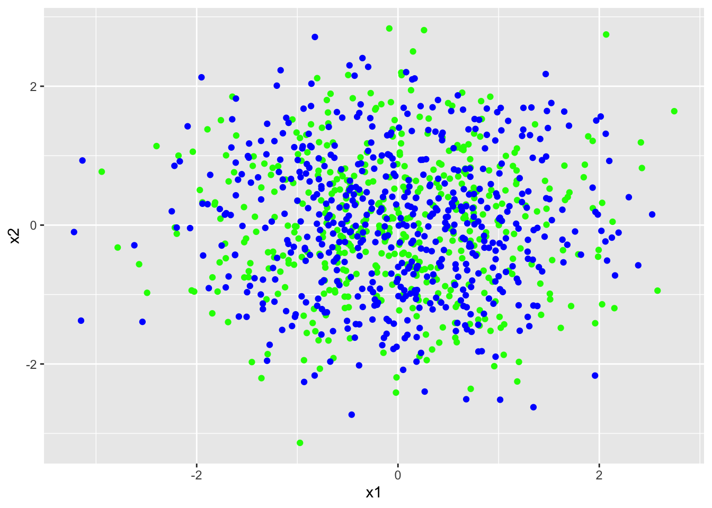
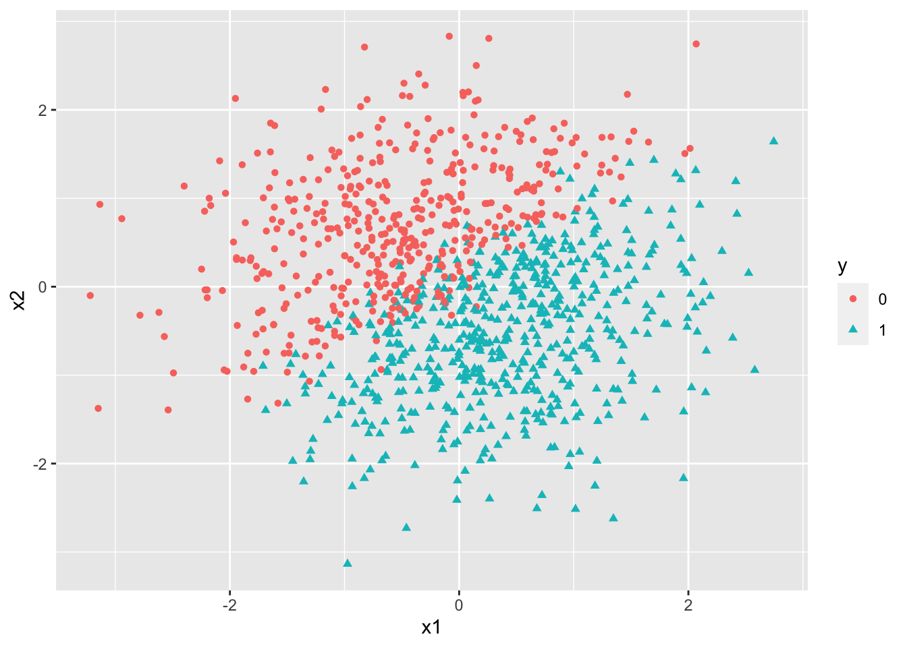
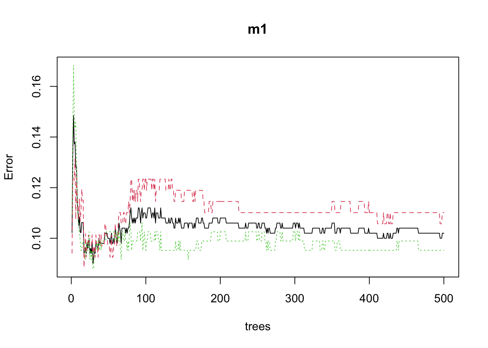
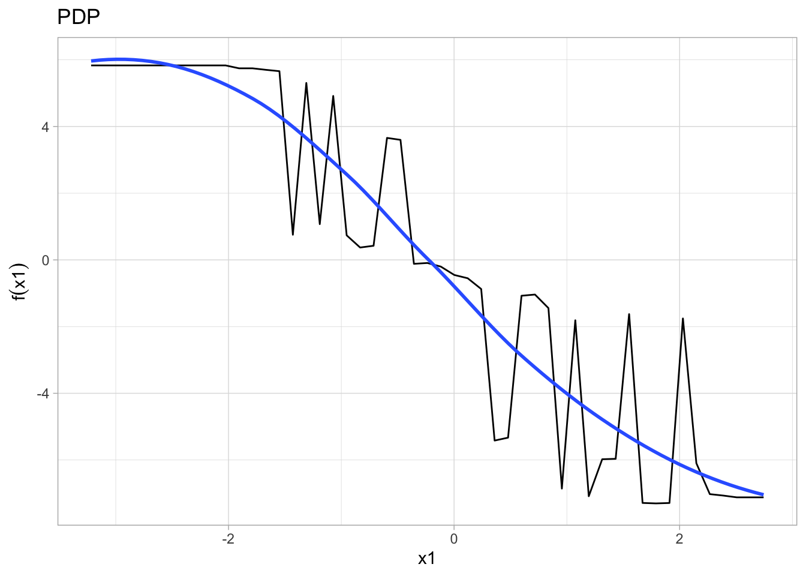

Random Forest algorithm
set.seed(666)
x1 = rnorm(1000,0,1) # some continuous variables
x2 = rnorm(1000,0,1)
z = 5*x1 + -6*x2 +1 # linear combination with a bias
prob= 1/(1+exp(-z))
y = rbinom(1000,1, prob)
# bernoulli response variable
df = data.frame(y=y,x1=x1,x2=x2)
train = df %>%
sample_frac(0.46)
test = df %>%
setdiff(train)
plot1 <- qplot(train$x1, train$x2)
plot1 <- qplot(test$x1, test$x2)
plot1 <- ggplot(train, aes(x1, x2)) +
geom_point(data = train, color="green")+
geom_point(data = test, color="blue")
plot1
set.rseed(666)
df_train = df %>%
sample_frac(.5)
df_test = df %>%
setdiff(df_train)
tree_df=tree(y~., df_train)
summary(tree_df)##
## Regression tree:
## tree(formula = y ~ ., data = df_train)
## Number of terminal nodes: 13
## Residual mean deviance: 0.04955 = 24.13 / 487
## Distribution of residuals:
## Min. 1st Qu. Median Mean 3rd Qu. Max.
## -0.98740 0.00000 0.00000 0.00000 0.01258 0.96150df<-df%>%
mutate(y = as.factor(y))
ggplot(df,aes(x=x1, y=x2, color =y)) +
geom_point(aes(shape=y))
set.rseed(666)
df_train = df %>%
sample_frac(.5)
df_test = df %>%
setdiff(df_train)
tree_df=tree(y~., df_train)
summary(tree_df)##
## Classification tree:
## tree(formula = y ~ ., data = df_train)
## Number of terminal nodes: 13
## Residual mean deviance: 0.3231 = 157.3 / 487
## Misclassification error rate: 0.078 = 39 / 500m1 <- randomForest(
formula = y ~ .,
data = df_train
)
random_forest_estimate=predict(m1,
newdata = df_test)
mean((random_forest_estimate - df_test$y)^2)## Warning in Ops.factor(random_forest_estimate, df_test$y): '-' not meaningful for
## factors
## Warning in Ops.factor(random_forest_estimate, df_test$y): '-' not meaningful for
## factors## [1] NAplot(m1)
p1 <- m1 %>% # the %>% operator is read as "and then"
partial(pred.var = "x1") %>%
autoplot(smooth = TRUE, ylab = expression(f(x1))) +
theme_light() +
ggtitle("PDP")
p1## Warning: Use of `object[[1L]]` is discouraged. Use `.data[[1L]]` instead.## Warning: Use of `object[["yhat"]]` is discouraged. Use `.data[["yhat"]]`
## instead.## Warning: Use of `object[[1L]]` is discouraged. Use `.data[[1L]]` instead.## Warning: Use of `object[["yhat"]]` is discouraged. Use `.data[["yhat"]]`
## instead.## `geom_smooth()` using method = 'loess'
set.seed(666)
x1 = rnorm(1000,0,1) # some continuous variables
x2 = rnorm(1000,0,1)
z = 1*x1 + -1*x2 + 7*x1*x2+1 # interaction
prob= 1/(1+exp(-z))
y = rbinom(1000,1, prob)
# bernoulli response variable
df2 <- data.frame(y=y,x1=x1,x2=x2, x3 = x1*x2)
log2<-glm( y~x1+x2+x3,data=df2,family="binomial")## Warning: glm.fit: fitted probabilities numerically 0 or 1 occurredglm_probs <- data.frame(probs= predict(log2, type="response"))
head(glm_probs)## probs
## 1 9.276922e-01
## 2 1.000000e+00
## 3 9.790877e-01
## 4 3.991209e-06
## 5 1.761732e-01
## 6 9.786807e-01